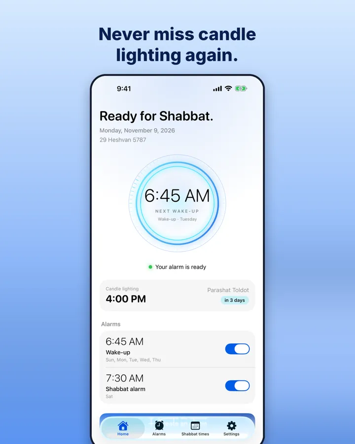
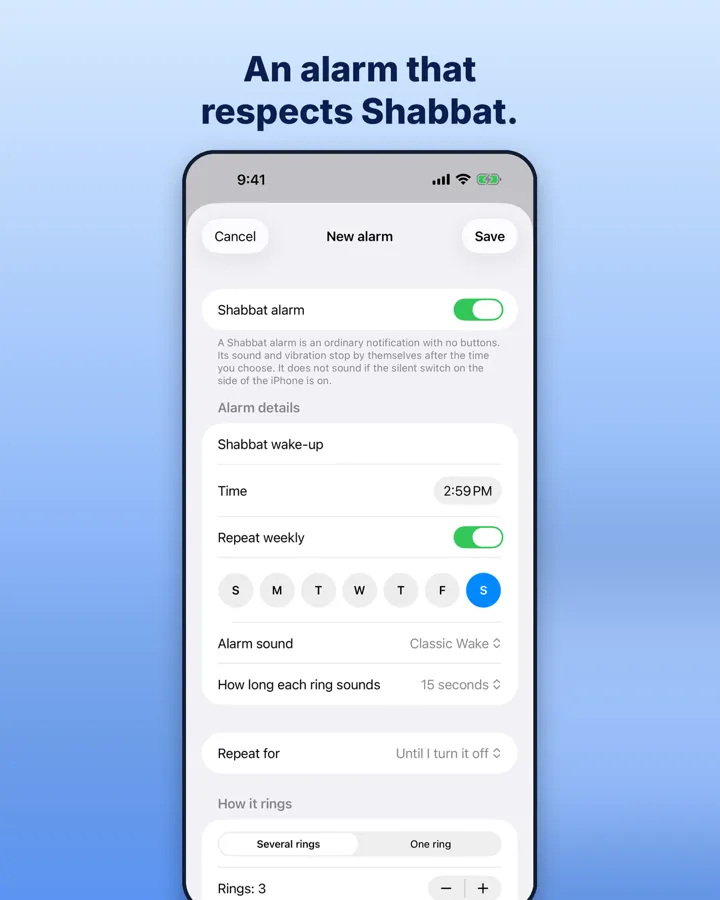
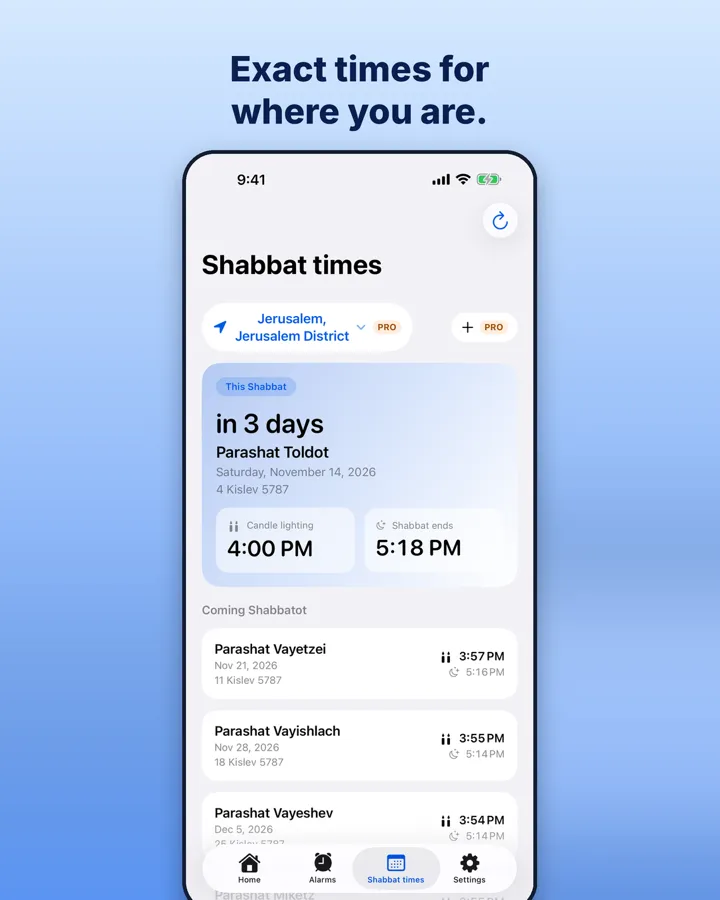
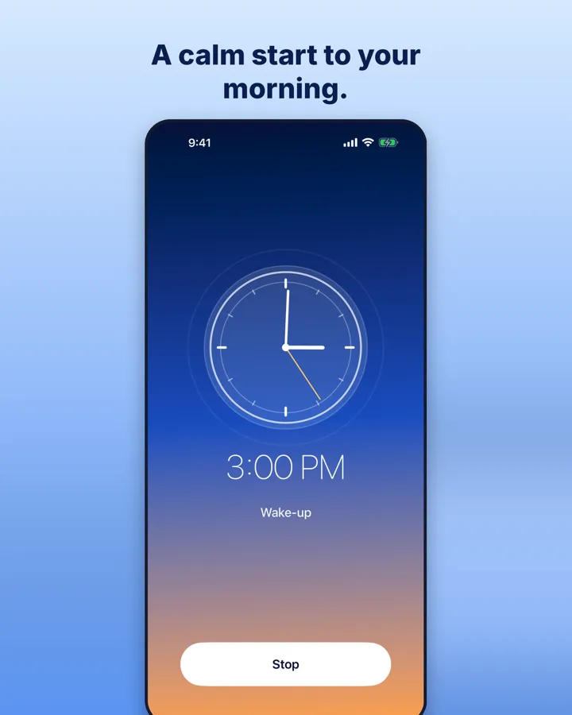
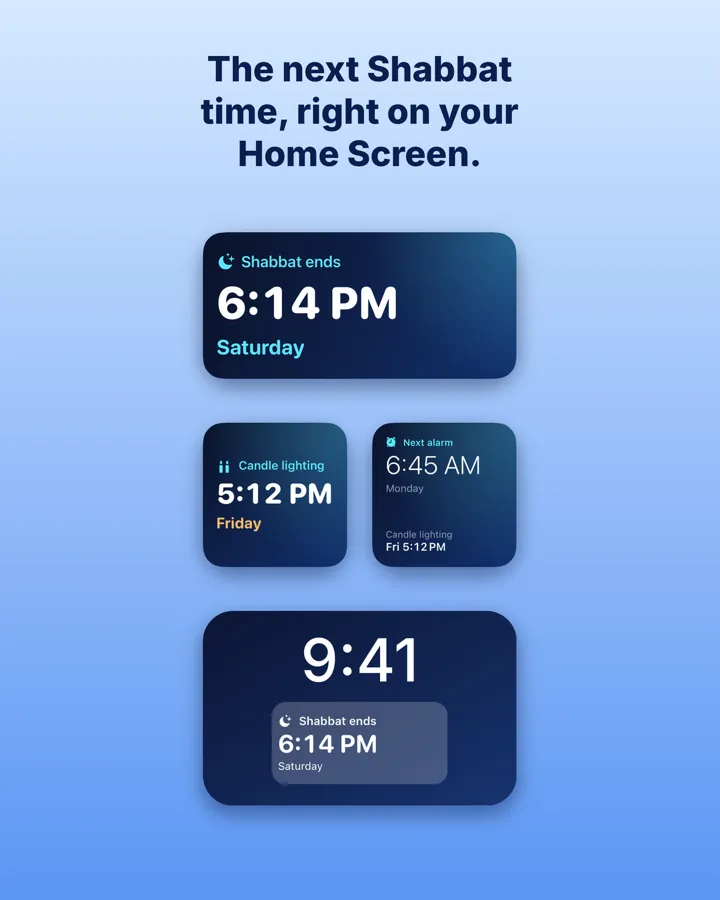

Shabbat Waker
An alarm clock that knows Shabbat. Regular alarms that ring even when your iPhone is on silent, and a gentle Shabbat alarm that stops by itself.
A quick look






Good to know
Alarms that ring
Regular alarms are system alarms, so they ring even when your iPhone is on silent.
The Shabbat alarm
On Shabbat the alarm is a plain system notification. It stops by itself after 10 to 50 seconds, with no need to touch the phone.
Times for your location
Candle lighting and havdalah for where you are, along with the weekly portion and the holidays.
All over your iPhone
Home Screen and Lock Screen widgets, Apple Watch and Siri.
Privacy
Only your precise location is sent to Hebcal to calculate the times. No account, no ads, no tracking.
Five languages
Hebrew, English, French, Russian and Spanish.
Free, with an optional Pro
Downloading the app and its core are free: alarms, candle lighting and Shabbat end times, and widgets. There is also an optional Pro upgrade with extras. Nothing in it is required, and you can use the app exactly as it is.